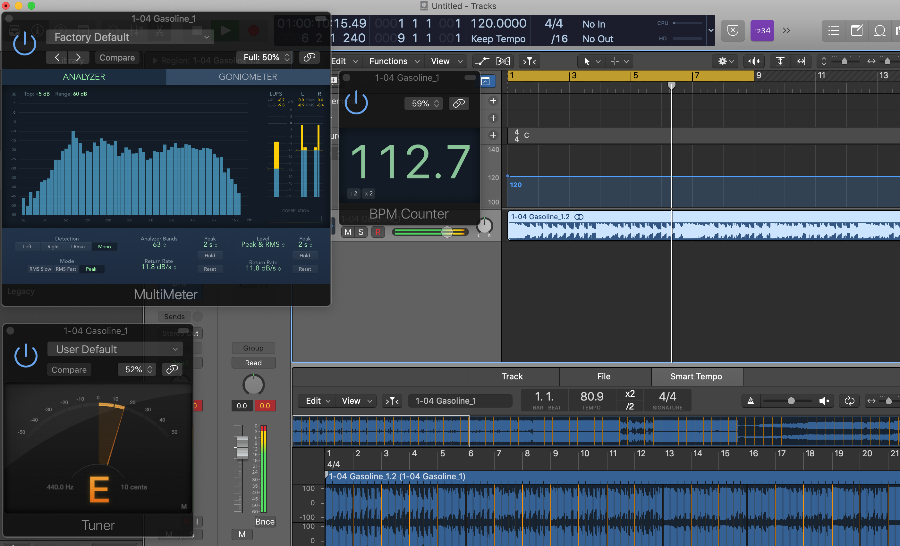

About the Band
Brand New, a band established in 2000 and ending in 2018, is comprised of four members. Jesse Lacey is the lead vocalist and rhythm guitar. Vincent Accardi is the lead guitarist and backing vocals. Brian Lane is the drummer and percussionist. Garrett Tierney is the bass guitarist and backing vocals.
Between 2001 and 2017 Brand New released five primary studio albums, two demo albums, and a handful of singles. Brand New is known to dynamically portray their music from album to album. Some fans say the band was initially categorized under genres such as pop punk and emo in its early days, and later matured and moved on to being better associated with genres such as post-hardcore and indie/alternative rock. On tour in 2017, the band announced with the release of its most recent album, Science Fiction, that it would be the last of the works of Brand New.
About the Project
At its core, this project seeks to analyze the change in style over time of the band Brand New. This change in style can be broken down both lyrically and instrumentally. To approach this two-fold analyzation, our team first dove into lyrical analysis of Brand New’s five studio albums.
Using XML to create a logical tree of elements starting from a root element within each song, we were able to organize and sort out wording patterns, lyrical techniques, references, and song structures. By doing this for each song in each of the five albums, we were able to make a collection of properly assorted lyrical data. After this, we dove into musical analysis by measuring the number of bars for each verse, chorus, intro, outro, postlude, etc. Additionally, we noted the keys and beats per minute of each song. This was done primarily through using the music editing/producing software Logic Pro X, as previewed in the picture below.
Once we accumulated enough data from each album, we focused on effectively pulling elements of interest into collections that we were then able to use in creating graphs. This was done through using programming languages such as XQuery, JavaScript, and SVG. Additionally we were able to use data visualization software such as Tableau and Power BI.
About the Team
Bryant Bolyen
Bryant Bolyen is a part of the UPG Class of 2021, if we all make it that long. He's an IT major. Likes: books, ice cream, music, and Ben's web design. Dislikes: eXide, XQuery, and eXide.
Benjamin Crawford
Benjamin is a part of the UPG Class of 2020. Majoring in IT, he is fascinated with all things encompassing technology. Being a music enthusiast, he an avid Brand New fan.
Bobby Pernell
Bobby Pernell is a part of the UPG Class of 2021. He is a History major and is also working towards the Digital Studies Certificate. He enjoys photography, drawing, and other stuff too sometimes.